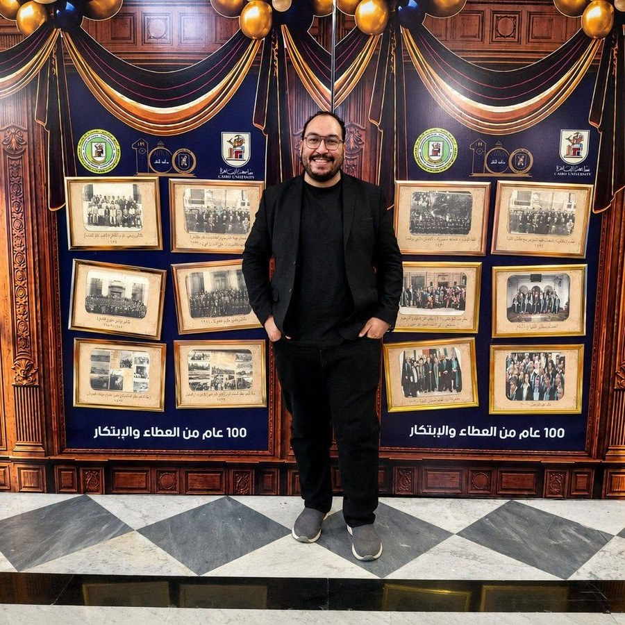

ملف سكوبس
Scopus ID: 57815650300
0
استشهادات
0
h-index
الملف الأكاديمي
مدرس مساعد في بيولوجيا الخلية والأنسجة والوراثة
قسم علم الحيوان · معمل بحوث العلوم الحيوية الخلوية والجزيئية
كلية العلوم، جامعة القاهرة.
أعمل باحثًا في بيولوجيا الخلية السرطانية والأورام الجزيئية وبيولوجيا الحويصلات خارج الخلية. يركز عملي على فهم الآليات الجزيئية لتطور السرطان وانتشاره ومقاومته للعلاج، مع اهتمام خاص بـ الخزعة السائلة لسرطان الثدي والمؤشرات الحيوية المعتمدة على الإكسوسومات.

المؤشرات الأكاديمية
ملف سكوبس
0
استشهادات
0
h-index
الباحث العلمي من جوجل
0
إجمالي الاستشهادات
0
h-index
0
i10-index
أدوات مطوّرة
طورت مجموعة من أدوات الحساب المتاحة عبر الويب لدعم الباحثين في الأعمال المعملية اليومية. تساعد هذه الأدوات في تبسيط حسابات شائعة في البيولوجيا الجزيئية وبيولوجيا الخلية، وتقليل الأخطاء اليدوية، وتوفير وصول سريع إلى المعادلات المستخدمة في سير العمل البحثي.
أدوات بحثية حاسوبية
أدوات حاسوبية تعمل عبر Google Colab لدعم سير العمل في النمذجة الجزيئية، ومقسمة إلى تحسين هندسة الجزيئات الصغيرة ونمذجتها، والإرساء الجزيئي.
تحسين الهندسة والنمذجة
نسختان عبر Google Colab لسير عمل تحسين هندسة الجزيئات الصغيرة والنمذجة الجزيئية.
نمذجة البروتين–الليجاند
سير عمل عبر Google Colab لحسابات الإرساء الجزيئي والنمذجة الحاسوبية.
الهوية العلمية
Mechanisms of cancer progression, metastasis, and therapeutic resistance.
Exosome and EV cargo biology for circulating biomarker discovery.
Non-invasive biomarker approaches for early detection and monitoring.
Proteomic profiling, metadata analysis, and computational interpretation.
Molecular pathways regulating tumor behavior and treatment response.
Cell culture, 3D organoids, cytotoxicity, apoptosis, and flow cytometry workflows.
EV-mediated communication and microenvironment-associated disease markers.
Integration of cellular, tissue, and genetic perspectives in biomedical research.
يجمع عملي الأكاديمي بين بيولوجيا الخلية التجريبية والبروتيوميات والمعلوماتية الحيوية لاكتشاف مؤشرات حيوية ذات قيمة سريرية. وأعمل حاليًا على رسالة الدكتوراه في التوصيف البروتيومي للإكسوسومات الدائرة لدى مريضات سرطان الثدي بهدف تحديد بصمات إكسوسومية تدعم تطوير أساليب عملية ومنخفضة التكلفة وغير جراحية للخزعة السائلة من أجل الكشف المبكر ومتابعة المرض.
Faculty of Science, Cairo University, Egypt
Grade: Excellent, 94.625%
Faculty of Science, Cairo University, Egypt
Faculty of Science, Cairo University, Egypt
Grade: Very Good, 84%
Faculty of Science, Cairo University, Egypt
Excellent with Honors, GPA 4.2/5, 92%
التكريم
ملتقى جامعة القاهرة الثالث للابتكار: الابتكار والبحث العلمي من أجل صناعة المستقبل والتنمية المستدامة
المكان: المكتبة المركزية، جامعة القاهرة · 26 يوليو 2026
التكريم: المركز الثاني لأفضل فكرة بحثية ابتكارية.
جامعة القاهرة · 2025
مؤتمر العلوم في قلب الابتكار (SCI 2026) · جامعة القاهرة · 7–8 أبريل 2026
جامعة القاهرة · 2023، 2024، 2025
جامعة القاهرة
جامعة القاهرة
دفعة خريجي كلية العلوم
كلية العلوم
نقابة المهن العلمية
المسيرة الأكاديمية
تتجدد أربع صور كل 10 ثوانٍ، وتظهر جميع الصور قبل إعادة خلط التسلسل.
قسم علم الحيوان · معمل بحوث العلوم الحيوية الخلوية والجزيئية, Faculty of Science, Cairo University, Giza, Egypt
قسم علم الحيوان · معمل بحوث العلوم الحيوية الخلوية والجزيئية, Faculty of Science, Cairo University, Giza, Egypt
Alfa Laboratories, Giza, Egypt
Grant ID: 46282
Funding Institute: Science, Technology & Innovation Funding Authority (STDF), Egypt
Role: Member of the research team; Researcher B, M.Sc. holder
Grant ID: Respect1-10052
Funding Institute: Academy of Scientific Research & Technology (ASRT), Egypt
Role: Member of the research team; Researcher B, M.Sc. holder
اضغط على السنة لعرض المنشورات، واستخدم أداة الترتيب لتغيير ترتيب السنوات.
تُعرض عناوين الأبحاث وأسماء الدوريات بلغتها الأصلية حفاظًا على الدقة العلمية.
المكتبة المركزية، جامعة القاهرة · 26 يوليو 2026
المشاركة: عرض ملصق علمي.
الجائزة: المركز الثاني لأفضل فكرة بحثية ابتكارية.
Cairo, Egypt · 7–8 April 2026
Poster: Plasma Small-Extracellular Vesicle Proteomic Signature in Neoadjuvant Chemotherapy-Naïve Obese Breast Cancer Patients.
Award: الفائز بالمركز الثاني لأفضل فكرة بحثية.
2025
Abstract: Knockdown and Inhibition of RNA-Binding Proteins Musashi-1 and Musashi-2 Modulate DNA Repair and Radiosensitize Triple-Negative Breast Cancer.
Cairo, Egypt · 9 July 2025 · Attendee
Cairo, Egypt · 22 February 2025 · Attendee
Cairo, Egypt · 2014 · Attendee
Member, مصري Society of Embryology and Assisted Reproduction Technologies.
Committee Rapporteur, Student Activity Committee, Zoology Department, كلية العلوم، جامعة القاهرة.
Weekly practical teaching for undergraduate students at the Department of Zoology, كلية العلوم، جامعة القاهرة.
Photography – participant in the second, third, and fourth annual photography galleries at Sakia Elsawy, participant in the second Cairo University street photography competition, and winner of an appreciation award.
Proteomic Profiling of Circulating Exosomes in Breast Cancer Patients.
Core aim: Proteomic profiling of circulating exosomes from breast cancer patients to identify exosomal proteome signatures for non-invasive liquid biopsy applications.
Supervisors: Prof. Dr. Sherif Abdelaziz Ibrahim, Professor of بيولوجيا الخلية السرطانية, Zoology Department, Faculty of Science, Cairo University; Dr. Ghada Mohamed Abdel-Salam, Associate Professor of Pathology, National Cancer Institute, Cairo University; Dr. Sherif Nasser Mohamed Taha, Lecturer of Surgical Oncology, National Cancer Institute, Cairo University.
Evaluation of the Potential Anticancer Effect of a Novel Chalcone Derivative in Ehrlich Solid Carcinoma-Bearing Mice.
Department of Zoology, كلية العلوم، جامعة القاهرة.
Supervisors: Prof. Dr. Sherif Abdelaziz Ibrahim, Prof. Dr. Salwa Sabet, and Prof. Dr. Haidan Mosatafa.
Examiners:
• Prof. Dr. Burkhard Greve, Department of Radiotherapy–Radio Oncology, University Hospital Münster
• Prof. Dr. Ahmed Said Alazzouni, Department of Histology and Histochemistry, Faculty of Science, Helwan University
Thesis المنشورات العلمية
جهة الانتساب:
Cellular & Molecular Biosciences Research Laboratory,
Department of Zoology, Faculty of Science,
Cairo University, 12613 Giza, Egypt.
البريد الإلكتروني:
awalyeldeen@sci.cu.edu.eg
awalyeldeen@cu.edu.eg
الموقع الإلكتروني:
amrwalyeldeen.github.io
أ.د. شريف إبراهيم
قسم علم الحيوان، كلية العلوم، جامعة القاهرة
البريد الإلكتروني: isherif@cu.edu.eg